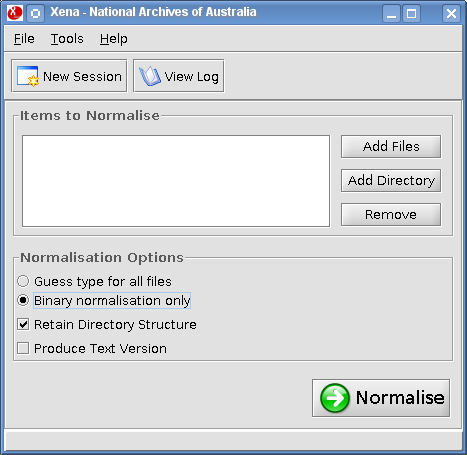
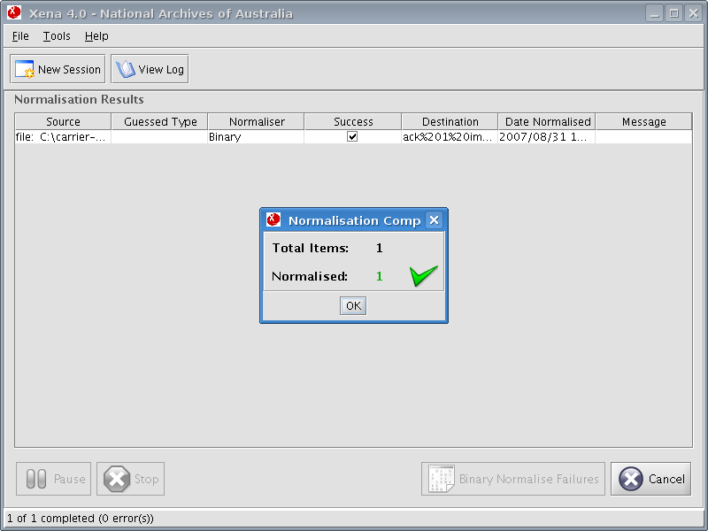

To binary normalise files (preserving their original format without converting to an openly specified format), firstly use either the Add Files or Add Directory buttons to select the files to be processed.
Use the file browser to select the directory or an individual file to be binary normalised.
Back at the main screen, first check the Binary Normalisation Only radio button at the bottom of the main screen and then click Normalise to begin the process.

During processing, the Pause and Stop buttons will become available. Please note that rather than halting the process immediately, either of these will interrupt processing once the current file has been processed. If the current file is large or complex, there may be some delay before either of these buttons come into effect.
Once processing is completed, the results are presented. Click OK.

Upon completion, the Cancel button may be used to delete the resulting Xena file(s) and start again. This may be useful if the wrong file was accidentally normalised. The New Session button may be used after completion to continue processing files without altering any existing results.